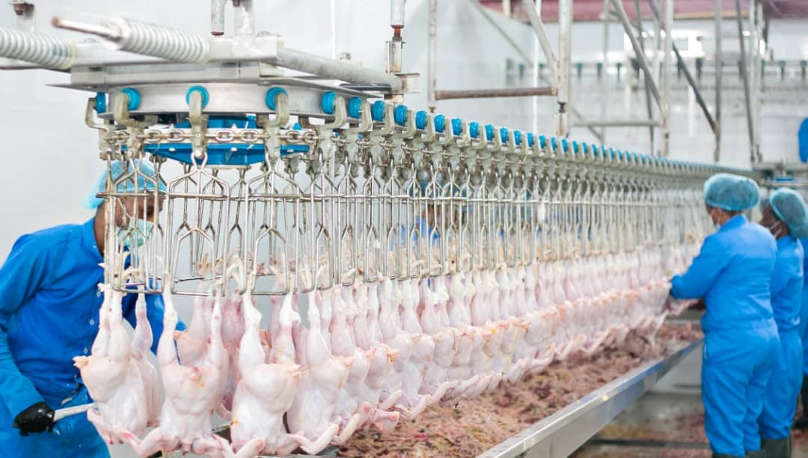
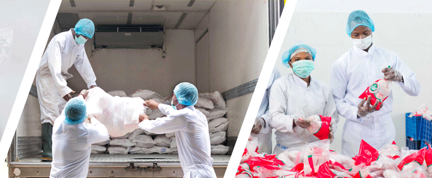

I am an Operational Excellence Specialist with over four years of experience, proficient in Lean, Six Sigma, 5S, Kaizen, JIT and various process improvement methodologies. Through problem-solving and strategic use of improvement tools, I've led projects that enhance efficiency, streamline workflows, and elevate quality standards. My approach drives impactful results and fosters sustainable operational improvements across organizations.

The project aimed to decrease the time-to-complete work scheduling for production line workers, thereby enhancing production efficiency. Challenges included a lack of supervisor feedback on software difficulties, the absence of a prioritized formal handover process, and gaps in supervisor tool knowledge. Solutions implemented included launching post-scheduling surveys for software feedback, enforcing sign-in protocols for shift supervisors, providing targeted training, and establishing a feedback system. These efforts resulted in a significant reduction of work scheduling time by 60%, from 5 hours to 2 hours, leading to improved operational efficiency.

The project's objective was to reduce downtime in the poultry processing line, transforming live poultry into high-quality fresh and frozen chicken products for wholesalers, caterers, and further processors. Key challenges included time-consuming manual cleaning and slow hanging of birds onto the production line. Solutions implemented were organizing workers into shifts for peak times and conducting a cost-benefit analysis for automated cleaning. These efforts resulted in a 30% reduction in average loading time and a transition from manual to semi-automated end-of-shift cleaning, significantly improving processing efficiency.

This project focused on eliminating distribution damage for delivered products by ensuring proper packaging protection. Key steps included implementing the 5S methodology to organize the workspace and ensure the availability of necessary materials, raising the inventory re-order point for protective wrap, and increasing order quantities to maintain a consistent supply. These measures led to a significant improvement in packaging processes, successfully reducing shipping damage to zero and enhancing both customer satisfaction and operational efficiency.

A strategic initiative to enhance product weight averages within Taghini Farms by ceasing reliance on external suppliers. Implemented measures such as the introduction of Noiler birds, strategic breeding programs, and slight price adjustments to offset losses. Resulted in significant cost savings, reduced machine wastes, and expansion of customer base, bolstering operational efficiency and profitability.